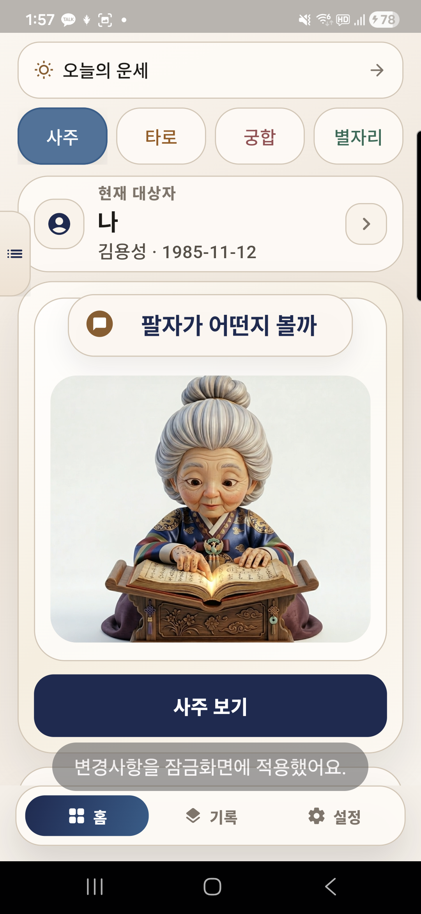
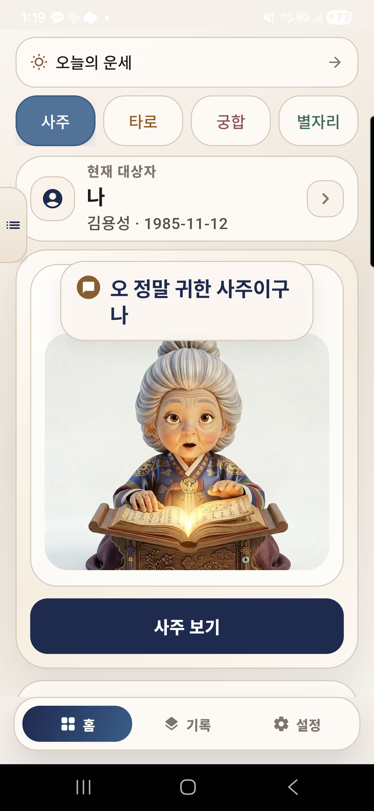
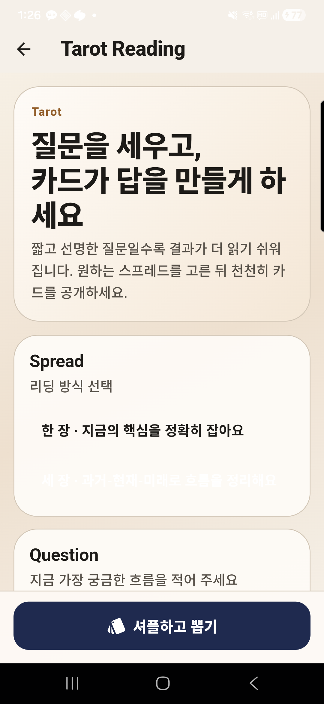
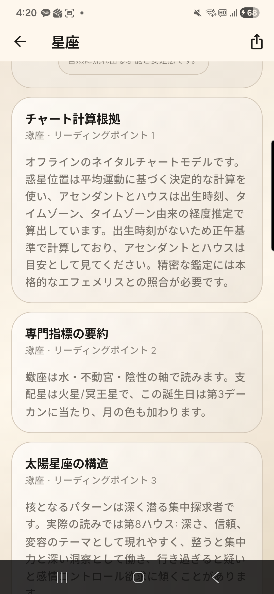

홈과 사주 리딩
오늘 운세, 대상자, 사주/타로/궁합 선택
Home

운명은 사주, 타로, 궁합, 오늘 운세와 저장한 리딩을 기기 중심으로 관리하는 로컬 우선 운세 앱입니다.




출생 프로필을 바탕으로 오늘의 흐름과 기본 사주 리딩을 확인합니다.
질문에 맞는 카드 흐름을 뽑고 결과를 저장하거나 공유합니다.
두 프로필의 관계 흐름을 비교하고 중요한 포인트를 정리합니다.
별자리, 토정비결, 주역, 손금, 관상, 전생 리딩을 탐색합니다.
프로필, 리딩 기록, 앱 설정은 기본적으로 사용자의 기기 안에 저장됩니다. 손금과 관상 기능의 사진은 사용자가 선택한 경우에만 앱 기능에 사용됩니다.